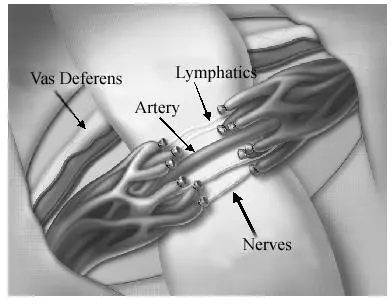
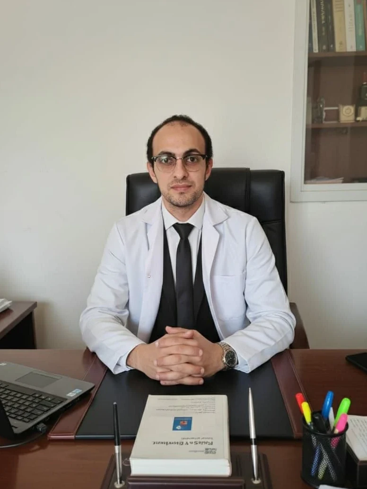

جراحة دوالي الخصية بالميكروسكوب الجراحي
Microscopic Subinguinal Varicocelectomy — التقنية الأكثر أماناً لحماية الخصوبة والتعافي السريع دون مضاعفات.

لماذا الميكروسكوب الجراحي؟
الفروق الإكلينيكية الجوهرية لضمان سلامتك التامة
الحفاظ التام على الشريان المغذي للخصية
Testicular Artery Preservationيوفر الميكروسكوب تكبيراً دقيقاً يصل إلى 20-25 ضعفاً، مما يتيح التمييز البصري الكامل بين الشريان الخصيوي النابض والأوردة المتضخمة المحيطة وتجنب ربطه بالخطأ، مما يحمي أنسجة الخصية من الضمور.
الحماية من القيلة المائية (Hydrocele)
عزل الأوعية الليمفاوية الدقيقةفي الجراحات التقليدية يتم ربط الأوعية الليمفاوية عشوائياً مما يسبب تجمع سوائل حول الخصية بنسبة تصل إلى 7%. بالميكروسكوب، يتم الحفاظ عليها بالكامل مما يقلل النسبة لأقل من 0.4%.
ربط جميع الأوردة المجهرية التابعة
تجنب رجوع الدوالي نهائياًالأوردة الصغيرة التابعة (Collaterals) لا تُرى بالعين المجردة وتكون السبب الرئيسي لرجوع الدوالي. رؤيتها بوضوح تضمن استئصال المشكلة من جذورها.
دواعي إجراء الجراحة والفوائد الملموسة
متى يُوصي د. كريم زاهر بالتدخل الجراحي الميكروسكوبي؟
علاج تأخر الإنجاب وعقم الرجال
خفض احتباس الدم الساخن يعيد درجة حرارة الخصية لطبيعتها، مما يحسن عدد الحيوانات المنوية، ويزيد حركتها ويقلل نسبة التشوهات وتكسر الحمض النووي (DNA Fragmentation).
إنهاء آلام وثقل كيس الصفن
القضاء على الإحساس المزعج بالشد أو الثقل الناتج عن ركود الدم الوريدي بعد الوقوف لفترات طويلة أو ممارسة الرياضة.
حماية هرمون الذكورة (التستوستيرون)
حماية خلايا ليديج (Leydig cells) المسؤولة عن إفراز التستوستيرون من التلف التدريجي، مما يعزز الحيوية والقدرة البدنية والجنسية للرجل.
خطوات العملية وفترة التعافي السريعة
-
1
التخدير المناسب والأمان
30 دقيقةتتم العملية تحت تخدير موضعي مدعّم أو نصفي أو كلي خفيف جداً بناءً على تفضيل المريض والتقييم الطبي.
-
2
الفتحة التجميلية المصغرة
أقل من 2 سمجرح تجميلي دقيق جداً أسفل البطن تحت خط الحزام (Subinguinal) بدون قطع في عضلات الجدار البطني، وتغلق بخياطة تجميلية مخفية تماماً.
-
3
الخروج في نفس اليوم
بعد 3-4 ساعاتيرتاح المريض بغرفة الإفاقة ثم يتناول وجبة خفيفة ويغادر المستشفى سيراً على الأقدام بكامل لياقته في نفس اليوم.
-
4
العودة للعمل والنشاط
خلال 48-72 ساعةإمكانية العودة للعمل المكتبي وقيادة السيارة بعد يومين إلى ثلاثة، مع تجنب حمل الأوزان الثقيلة والرياضات العنيفة لمدة 3 أسابيع.
إرشادات هامة بعد الجراحة
- check_circle ارتداء كيس رافع للخصية (داعم قطني) لمدة أسبوعين لتقليل الشد والتورم البسيط.
- check_circle الاستحمام مسموح به بعد 48 ساعة بواسطة الغطاء المائي المعقم على الجرح.
- check_circle إجراء تحليل السائل المنوي للمتابعة وتقييم التحسن بعد 3 أشهر من العملية (دورة إنتاج الحيوانات المنوية).
الأسئلة الأكثر شيوعاً حول دوالي الخصية
متى يظهر التحسن في فحص السائل المنوي بعد العملية؟
هل يمكن أن ترجع دوالي الخصية مرة أخرى بعد الجراحة الميكروسكوبية؟
هل تؤثر العملية أو الدوالي على القدرة الجنسية والانتصاب؟
استشارة دوالي الخصية مع د. كريم زاهر
فحص سريري متخصص ودوبلر تشخيصي ملون بأحدث المعايير لتحديد مدى الحاجة للجراحة وخطة العلاج الأمثل.
زهراء المعادي - الشطر الثالث عشر - برج الندى (الدور الأول).
تجارب المرضى بعد الجراحة
star 4.9 / 5"أجريت عملية دوالي الخصية بالميكروسكوب مع د. كريم زاهر بعد معاناة سنة ونصف مع تأخر الإنجاب. العملية كانت بدون أي ألم يذكر ورجعت شغلي بعد 3 أيام، والحمد لله تحسن الفحص وحدث الحمل بفضل الله ثم خبرة الدكتور واهتمامه."